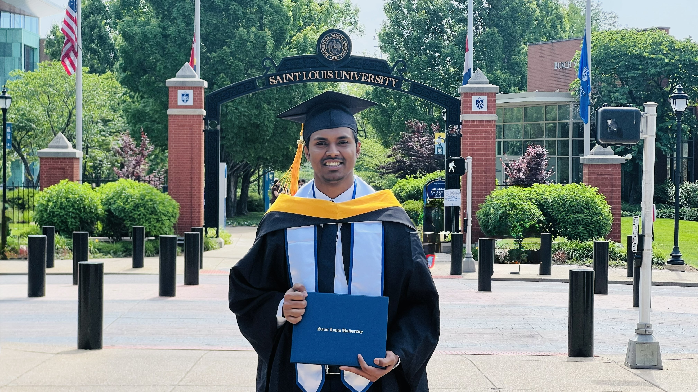
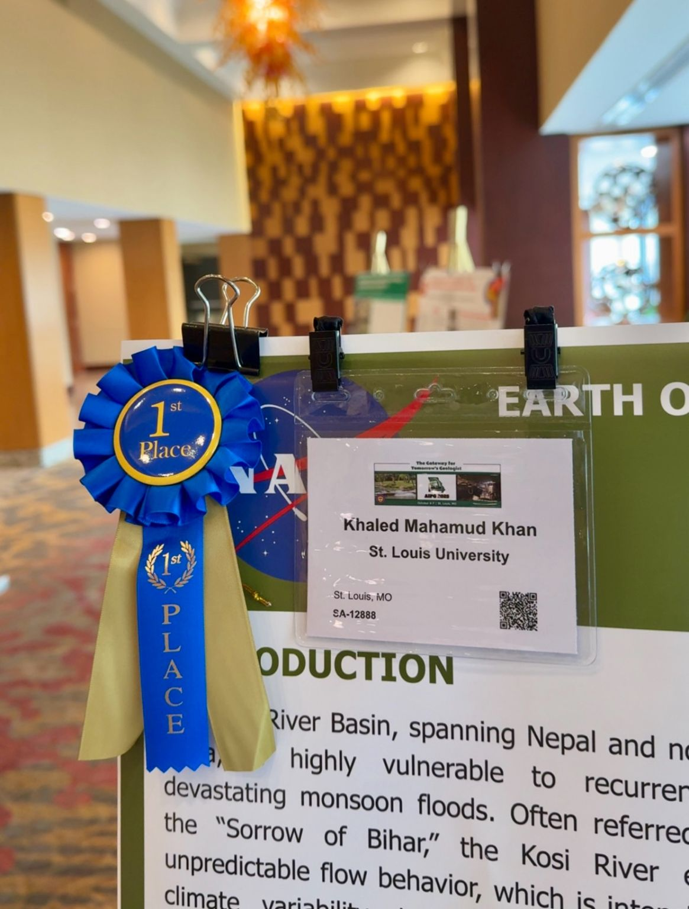
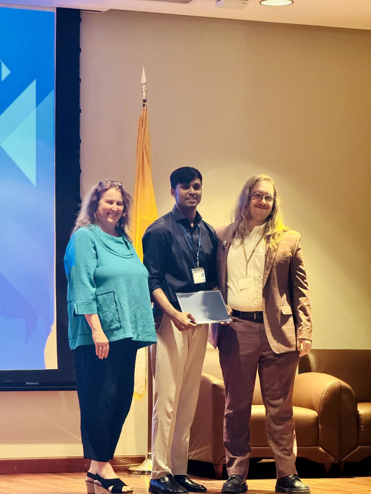

Intro

I’m Khaled Mahamud Khan, a Ph.D. student in Geoinformatics and Geospatial Analytics
at Saint Louis University, Missouri, USA. My work combines GIS, remote sensing, machine learning, and
hydraulic modeling to study river dynamics, watershed processes, and sustainable water resource management.
I’m a Graduate Research Assistant at Saint Louis University and have taught
Introduction to GIS and Machine Learning Applications in GIS & Remote Sensing.
See my research and experience.
Education

-
Ph.D., Geoinformatics & Geospatial Analytics — Saint Louis University, USA (Expected May 2028)
-
MS, Geographic Information Science — Saint Louis University, USA (May 2026)
CGPA: 3.9/4.0
Thesis: River Avulsions and Flood Hazards: Insights from the Koshi and Athabasca River Basins
-
MS, Geography & Environment — Jahangirnagar University, Bangladesh (July 2024)
CGPA: 3.83/4.0 • Complementary Merit Scholarship for outstanding academic performance
Coursework: Flood Plain and Watershed Management, Contemporary Geographic Thoughts, Disaster Risk Management,
Environmental Economics, Law and Sustainability
-
BS, Geography & Environment — Jahangirnagar University, Bangladesh (Aug 2023)
CGPA: 3.62/4.0 • Complementary Merit Scholarship for outstanding academic performance
Coursework: Geomorphology, Hydrology, Remote Sensing of Environment, Advanced GIS, River Channel: Forms and Dynamics,
Models in Environmental Geography
Skills
- GIS & Remote Sensing: ArcGIS, QGIS, Google Earth Engine, ENVI, Erdas Imagine, SNAP
- Data Science & Programming: Python, R, JavaScript, SQL
- Hydraulic Modeling: Delft3D FM Suite, HEC-RAS
- Data Analysis & Visualization: SPSS, STATA, Tableau, Microsoft 365, Adobe Illustrator
Experience

-
Graduate Research Assistant, Saint Louis University (Aug 2024 – Present)
Conduct geospatial and remote sensing analyses with ArcGIS Pro, Google Earth Engine, and Python to model flood
susceptibility and watershed dynamics. Integrate machine learning and hydrodynamic modeling (HEC-RAS, Delft3D-FM)
to assess river morphology and floodplain processes. Contribute to peer-reviewed publications and present
award-winning research at national and university conferences.
-
Guest Lecturer / Teaching Assistant, Saint Louis University & Harris-Stowe State University (Spring & Fall 2025)
Taught undergraduate courses on Introduction to GIS and Machine Learning Applications in GIS and Remote Sensing,
combining lectures, labs, and hands-on exercises in ArcGIS Pro, Python, and remote sensing tools. Mentored students
in applying spatial analysis and modeling to environmental and hydrologic problems.
-
Counselor, Earth, Wind, and Water Summer Camp, Saint Louis University (Summer 2025)
Designed and led a two-hour session introducing high school students to GIS, remote sensing, and machine learning
in environmental science, including a hands-on workshop where they made their first maps in ArcGIS Pro.
-
Research Assistant, Jahangirnagar University (Aug 2021 – July 2024)
Conducted environmental modeling research with GIS, remote sensing, and machine learning to analyze spatial and
climatic datasets. Co-authored a book chapter on sustainable seafood production and spatial planning in
Global Blue Economy (CRC Press).
Leadership & Volunteer Experience
-
Founder, Prosperity in Green (Sep 2021 – Present)
Community project that exchanges plastic waste for tree saplings: over 10,000 kg of plastic collected and
2,000+ plants distributed.
-
President, Jahangirnagar University Higher Study Club (Sep 2022 – Sep 2023)
Led 50+ executives in organizing 5+ seminars and workshops for over 1,000 students on higher education, skills
development, and scholarships abroad. Previously Organizing Secretary, Promotion Secretary, and Department Envoy.
-
General Secretary of Logistics, Jahangirnagar University Model United Nations Association (Mar 2019 – June 2020)
Coordinated logistics for on-campus and inter-university Model UN conferences.
Research
My research examines river avulsion, channel dynamics, and flood hazard in large alluvial systems by combining
SAR and optical remote sensing, machine learning, and hydrodynamic modeling.
Peer-Reviewed Publications
-
Khan, K. M., Wang, B., Dey, H., Pradhananga, D., & Smith, L. C. (2026). Flood susceptibility mapping
of the Kosi Megafan using ensemble machine learning and SAR data. Remote Sensing, 18(8), 1158.
https://doi.org/10.3390/rs18081158
-
Khan, K. M., Islam, M. N., & Wang, B. (2026). One-month-ahead river discharge forecasting using
machine learning and limited hydrometeorological data: The Karatoya-Atrai River Basin, Bangladesh.
Frontiers in Water, 8, 1917644.
https://doi.org/10.3389/frwa.2026.1917644
Under Review
-
Wang, B., Koppe, C., Khan, K. M., Pradhananga, D., & Smith, L. C. (2026). Avulsion-driven
reorganization of channel-belt composition and spatial flow distribution in the Koshi River, Nepal.
Earth Surface Processes and Landforms.
Book Chapter
-
Islam, M. N., Tamanna, S., & Khan, K. M. (2022). Modern seafood production to enhance the blue economy:
A proposed sustainable model for Bangladesh. In Global Blue Economy (1st ed., Chapter 13). CRC Press.
https://doi.org/10.1201/9781003184287-13
Conference Abstracts
-
Khan, K. M., Islam, M. N., & Wang, B. (2024, December). Modeling the impact of runoff on the floodplain
of the Atrai River using machine learning technique. AGU Fall Meeting Abstracts (Vol. 2024, No. 1323, EP33A-1323).
Conferences & Presentations
- CaGIS Conference 2026, St. Louis, Missouri (Sept 2026)
- HydroML 2026 Symposium, University of Texas at Austin, Texas (May 2026)
- SLU Sigma Xi Research Symposium, Saint Louis University, St. Louis (Mar 2026)
- 2026 AAG Annual Meeting, American Association of Geographers, San Francisco (Mar 2026)
- Three Minute Thesis (3MT) Competition, Saint Louis University, St. Louis (Feb 2026)
- 62nd AIPG National Conference, American Institute of Professional Geologists, St. Louis (Oct 2025)
- 31st Annual Graduate Research Symposium, Saint Louis University, St. Louis (May 2025)
- Three Minute Thesis (3MT) Competition, Saint Louis University, St. Louis (Jan 2025)
- AGU24 Annual Meeting, American Geophysical Union, Washington, D.C. (Dec 2024)
- GIS Olympiad, Jahangirnagar University, Bangladesh (Mar 2024)
Honors & Awards


-
2nd Place, Three Minute Thesis (3MT) Competition — Saint Louis University (Feb 2026)
Master’s category.
-
1st Place, Poster Presentation, 62nd AIPG National Conference — American Institute of Professional Geologists (Oct 2025)
Competed against Master’s and Ph.D. students from universities across the United States.
-
1st Place, 31st Annual Graduate Research Symposium — Saint Louis University (May 2025)
Physical Science category, research poster competition against Master’s and Ph.D. students; organized by the
Graduate Student Association.
-
3rd Place, Three Minute Thesis (3MT) Competition — Saint Louis University (Jan 2025)
Master’s category; organized by the School of Science and Engineering.
-
2nd Place, GIS Olympiad — Jahangirnagar University (Mar 2024)
Project showcase: “Suitable Site Selection for Business” using GIS.
-
Complementary Merit Scholarship — Jahangirnagar University (BS & MS)
For outstanding academic performance.
Contact